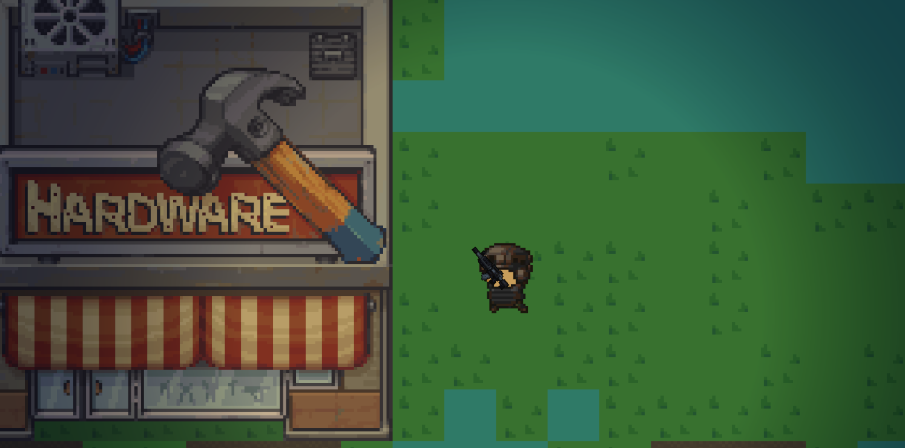
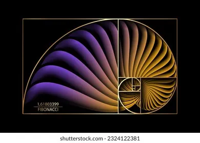

Projets réalisés

Création d’un jeu vidéo multijoueur (projet scolaire)
Contexte : projet réalisé dans le cadre de ma formation à l’EPITA.
Objectif : concevoir un jeu 2D multijoueur en ligne, combinant développement, logique réseau et design d’interaction.
UnityC#PhotonMultijoueur
Technologies utilisées
- Moteur : Unity
- Langage : C#
- Réseau : Photon (synchronisation des joueurs en temps réel)
Rôle personnel
Travail principal sur le système de tir de l’arme du joueur (Raycast) et la synchronisation des interactions entre clients. Participation à la gestion des collisions, à la structuration du code et à la coordination de l’équipe.
Résultats et apprentissages
Compréhension d’un système réseau en temps réel, application des principes de POO, renforcement des compétences en débogage et gestion d’équipe. Adaptation aux contraintes techniques réelles (latence réseau, synchronisation des entités).
Compétences mobilisées
- Programmation orientée objet (C#)
- Gestion de projet collaboratif
- Conception logicielle
- Communication et coordination d’équipe

Mini-projet d’algorithmique : suite de Fibonacci
Contexte : mini-projet individuel d’algorithmique.
Objectif : calculer le plus grand nombre de Fibonacci possible en une seconde, en optimisant la vitesse d’exécution.
Approche
- Version récursive naïve (référence comparative)
- Version itérative optimisée
- Version avec mémoïsation et usage de la formule de Binet (approximations logarithmiques)
Résultat
La version optimisée atteint un indice très élevé (plusieurs millions) en moins d’une seconde.
Compétences mobilisées
- Optimisation algorithmique
- Gestion du temps d’exécution
- Analyse de complexité
- Rigueur et méthode expérimentale
Application complète OCR — Grille de mots cachés (en cours)
Contexte : développement en cours d’une application de bout en bout pour traiter des grilles de mots cachés à partir d’une image.
Objectif : importer une image, extraire la grille via reconnaissance optique de caractères, résoudre la grille (identifier les mots), et proposer une interface graphique pour visualiser, corriger et sauvegarder les résultats.
Fonctionnalités et approche
- Prétraitement de l’image et extraction de la grille
- OCR dédié aux caractères de la grille
- Moteur de recherche de mots et validation
- Interface graphique pour révision et export
Phase d’entraînement
Entraînement séparé d’un modèle de réseau de neurones convolutifs pour la reconnaissance de caractères.
PythonOpenCVOCRCNNUX
État
En cours — intégration des modules OCR et interface.